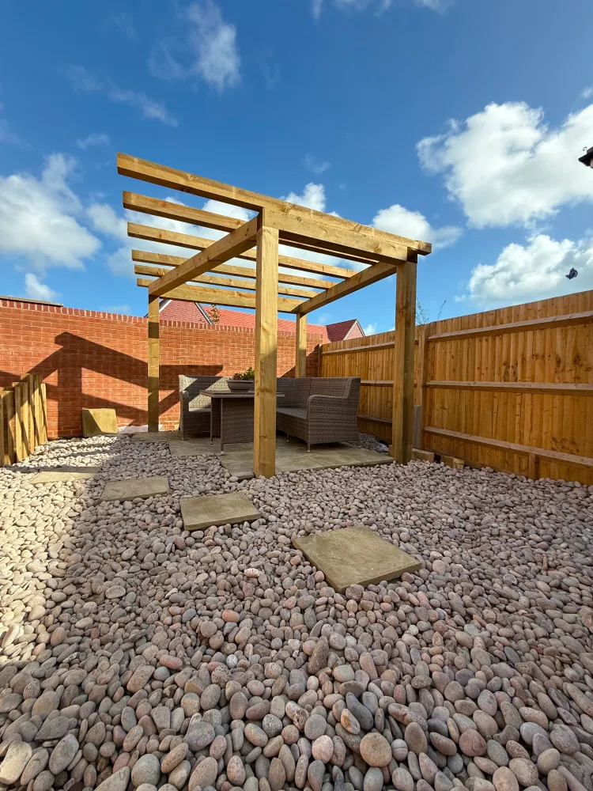
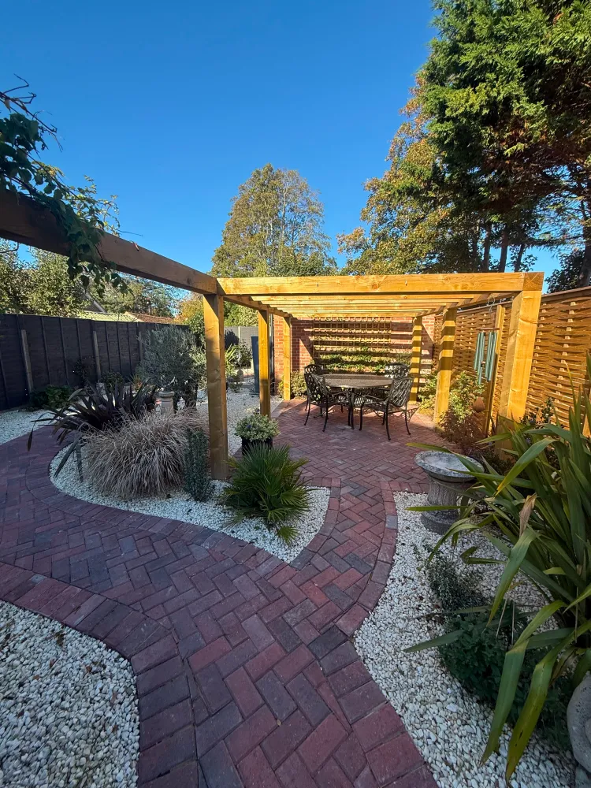

Architectural features that transform a garden.
Pergolas, cabins and outdoor structures create focal points, shelter and year-round usability in your garden. They add a vertical dimension to the landscape — drawing the eye upward and providing the architectural framework for outdoor living.
A Sterling Landscapes designs and builds bespoke structures that integrate seamlessly with your garden and property.

A well-designed pergola creates a sense of space and enclosure without closing off the garden. Whether it is a contemporary flat-roofed structure over a dining area or a traditional timber frame supporting climbing plants, a pergola defines how you use your outdoor space.
A Sterling Landscapes builds pergolas in timber, steel or a combination of materials — each designed to suit the property and the client's vision.
From home offices to garden studios, guest retreats to entertainment spaces — a bespoke garden cabin extends the usability of your property without the disruption of a home extension.
The team manages the full build process including groundworks, foundations, structure, cladding and finishing.
A Sterling Landscapes also creates covered seating areas and outdoor kitchens, arbours and arched walkways, shade structures and sail posts, and integrated storage solutions.
Every structure is designed with the same attention to detail and quality of finish that defines all our work.

Every outdoor structure by A Sterling Landscapes is built on proper foundations with quality materials and expert craftsmanship. From the initial groundworks through to the final finishing touches, the team ensures that your structure is solid, beautiful and built to last.